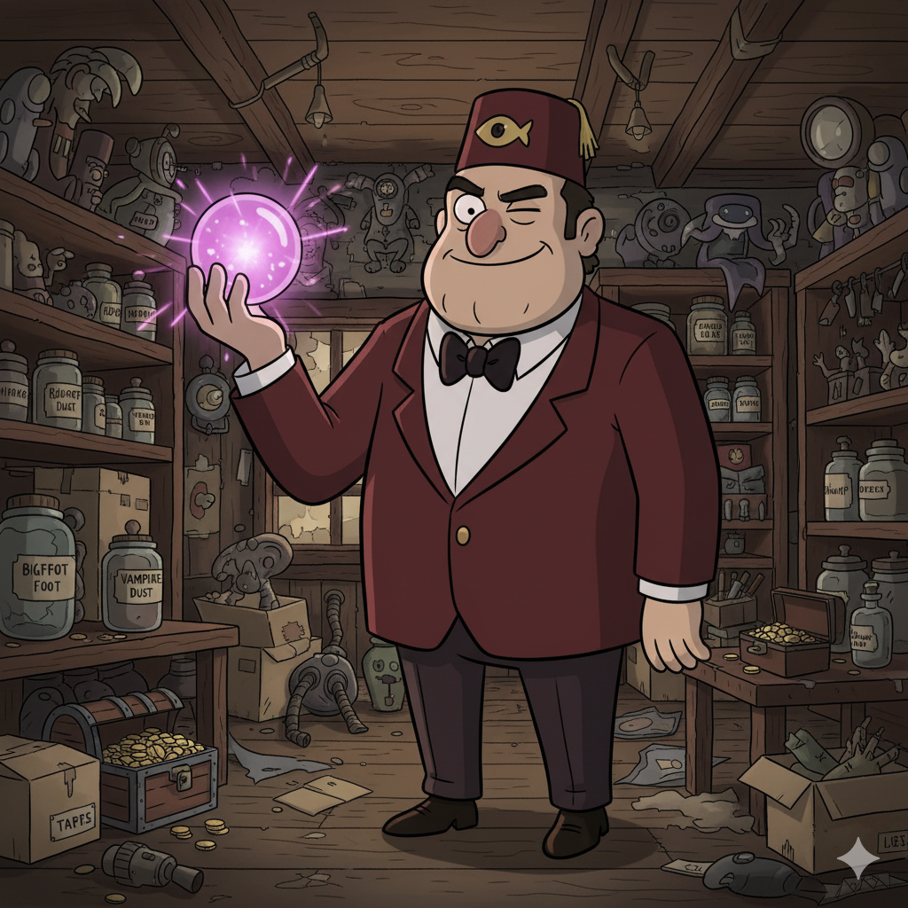

Fundada em 1945 pelo lendário explorador Stanford “Stan” Pines, a Mystery Shack nasceu de uma ideia simples: transformar o mistério em mercadoria. Com o passar das décadas, nossa loja se tornou o destino favorito de curiosos, caçadores de relíquias e turistas perdidos procurando o banheiro. Aqui, vendemos de tudo — desde amuletos amaldiçoados, cristais que piscam sozinhos, até itens que provavelmente não deveriam existir. Cada produto carrega uma história, e nem todas terminam bem (ou de forma explicável). Se você está em busca do extraordinário, do inexplicável ou apenas de um bom desconto, a Mystery Shack é o seu lugar. Mas cuidado: quanto mais tempo você passa aqui, mais as coisas começam a olhar de volta pra você...

Nossos produtos são tão únicos que nem nós sabemos exatamente o que fazem — e é isso que os torna especiais.
Coletamos, estudamos e (às vezes) vendemos relíquias que a ciência prefere ignorar.
Acreditamos que a curiosidade é uma força poderosa — e um ótimo modelo de negócio.
Porque nada é mais confiável (ou mais barato) do que a família... certo?